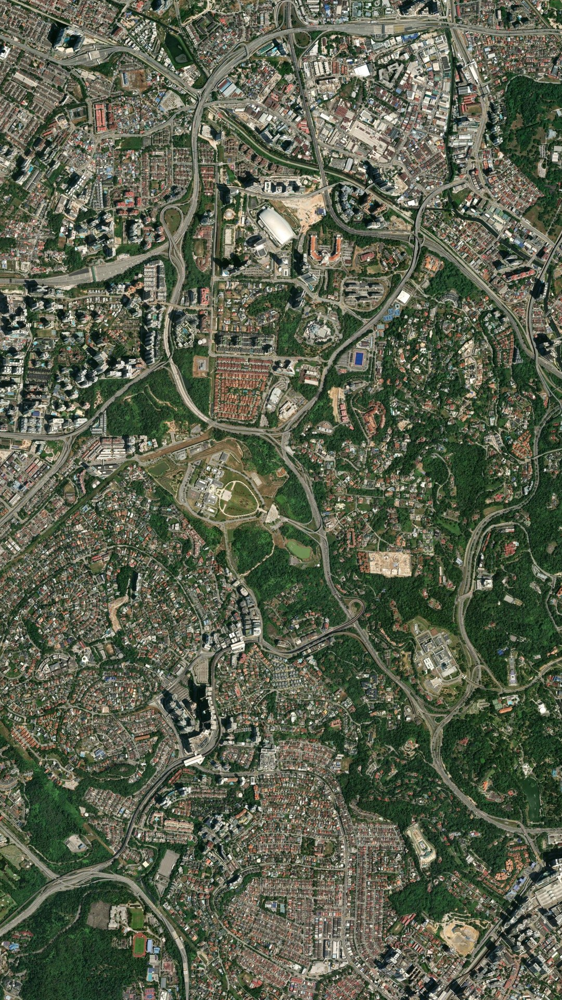

JALAN DUTA · 24 NOV 2026
BADAN PEGUAM
CABAR TAHANAN
RUMAH NAJIB
10 NOVEMBER
FAIL
SEMAKAN
12 NOV · AGC
BANTAH
“TAK BOLEH CABAR”
KEPUTUSAN AGONG
BOLEH DISEMAK?
Foto: Kerajaan Malaysia / Wikimedia Commons, CC BY-SA 3.0 · Satelit: Esri, Maxar